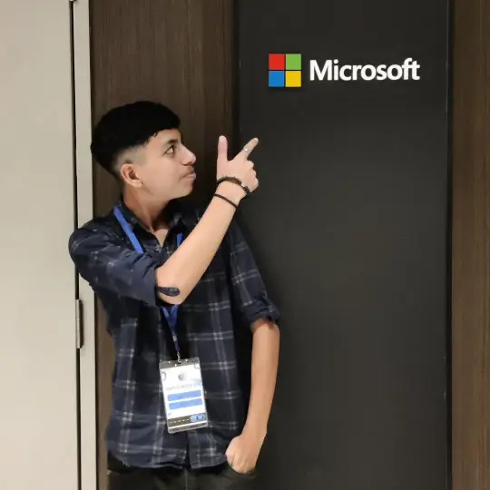

Join me as I take you through my step-by-step process of preparing for FAANG interviews. First and foremost,
I'll cover essential coding tutorials. Next, I'll move on to practical projects, data structures, and AI/ML
knowledge. Furthermore, you can follow along as I dive deep into algorithms. Additionally, I will tackle
coding challenges and showcase a variety of projects. These insights will guide you. They will help you land
your dream job at one of the top tech companies.

Ayush Gambhir
Aspiring Software Developer | MERN Stack Learner | AI/ML Enthusiast
I am Ayush Gambhir, a first-year BCA student at VIPS, Delhi, passionate about securing a software
development role at leading MNCs like FAANG and MAANG. So, I constantly improve my skills in programming
languages like Java, C, and DSA. I actively work on real-world projects and coding challenges.
I have completed a software engineering simulation with Goldman Sachs. I have also worked as a marketing
intern. During this time, I worked my skills in creating and executing marketing strategies.
Key Skills:
-
Languages:
Java, C, Python
-
Frameworks:
MERN Stack, TensorFlow
-
Focus Areas:
Data Structures & Algorithms, AI/ML
-
Projects:
Web Development, Open-Source Contributions
Know More
Aditya
Aspiring Software Developer | MERN Stack Learner | AI/ML Enthusiast
I am Ayush Gambhir, a first-year BCA student at VIPS, Delhi, passionate about securing a software
development role at leading MNCs like FAANG and MAANG. So, I constantly improve my skills in programming
languages like Java, C, and DSA. I actively work on real-world projects and coding challenges.
I have completed a software engineering simulation with Goldman Sachs. I have also worked as a marketing
intern. During this time, I worked my skills in creating and executing marketing strategies.
Key Skills:
-
Languages:
Java, C, Python
-
Frameworks:
MERN Stack, TensorFlow
-
Focus Areas:
Data Structures & Algorithms, AI/ML
-
Projects:
Web Development, Open-Source Contributions
Know More
From the Blog
Preparing for a FAANG Career: My Journey
C++ vs Python: Key Differences Between The languages
Python vs Java: Understanding the Key Differences
C++ vs Java: Understanding the Key Differences
Why I Chose Java for My FAANG DSA Preparation
My Projects
I strongly believe in learning by doing. Throughout my journey, I have worked on a variety of coding
projects. They show my dedication to solving real-world problems. These projects also show my growth as a
developer. Additionally, I have conducted several AI/ML experiments, which have further strengthened my
technical skillset. As a result, my work covers web development, open-source contributions, and the
development of machine learning models. Ultimately, these experiences have prepared me to tackle complex
coding challenges with confidence.
Whether building websites, preparing for interviews, or experimenting with new tech, I'm always there to
learn and share. You can join me in this exciting path to learn and grow.